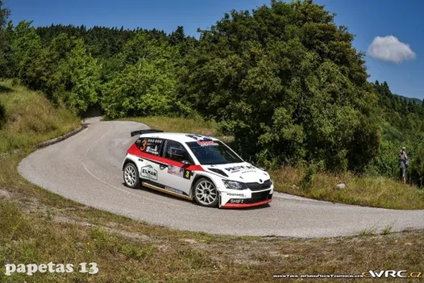
Can a Greek tarmac event like this one, be the ERC's Monte Carlo?
Rally Acropolis anticipation month has really hit me hard. I have been making a sheet that has all the Rally Acropolis stages from 1994-2023 (real nerd stuff, I know), and whether they can be used or not today. As I was doing my research, I stumbled across Rally ELPA. I know Rally ELPA, as Rally Chalkidiki, the one that was in Macedonia, near Thessaloniki that was a fan favourite back in the 80s and 90s. Undenounced to me though, the rally had also been ran in other places, Itea for example, with some classic Acropolis stages like Amfissa, Karoutes and Bauxites. But what intrigued me, was the fact that this event also ran as a tarmac rally in the Peloponnese, with stages that were used in Rally Achaios, and other rallies in the area, and some, where also used on Day 1 of Rally Acropolis in 2014. The rally was last ran in 2010, but there was also a plan for a 2011 tarmac version of the Rally, near the Acropolis stages in Fthiotida (Lamia area). That was cancelled due to financial reasons, and the event hasn’t been held since.

Picture from Rally Fthiotidos 2023 (Day1)
So that got me thinking, I made a post about paved Rally Acropolis stages the other day, why don’t I combine the 2 subjects? By making an ERC type of rally, that combines stages that were scheduled to be in the ELPA rally, and stages that used to be gravel stages for Acropolis, but are now paved! And that’s exactly what I have done. Some of the stages, have not been used in an actual tarmac rally (as far as I can tell) and others have been used by rallies on the Greek Tarmac Championship, like Rally Lamias, or Rally Fthiotidas, or even Rallysprints, where it’s just one stage 3 times for example. But to give it a bit of a twist, i decided to have it hosted in February, as the ERC season opener (instead of Fafe), as ERC’s Monte! If you think that’s a bit rich, that’s fine, just disregard the parts where I talk about the possibility of snow/ice, and treat this as a normal tarmac event. So without further ado, here’s my Rally Lamia – ERC candidate event !
Friday
Shakedown – Divri – 4,8 km
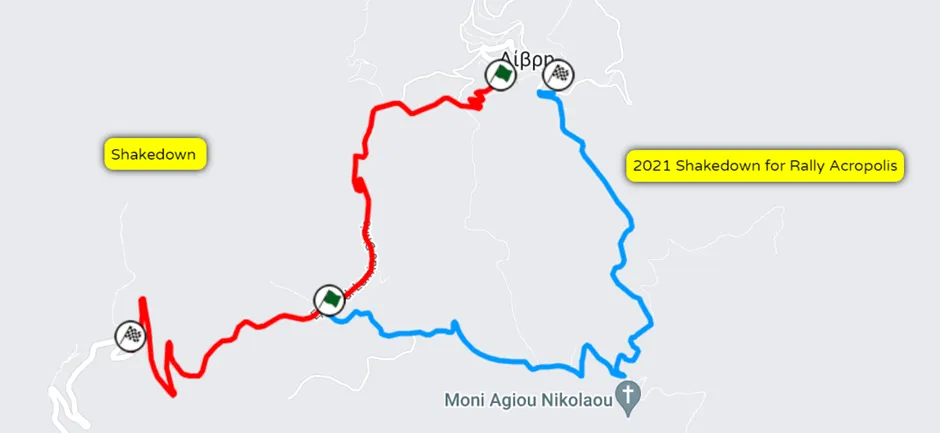
Map of the Shakedown stage, and also the 2021 Rally Acropolis Shakedown
For the shakedown stage, I chose a stage that is really close to Lamia. The shakedown is quite representative of the rally. The stage goes downhill, and becomes quite flowing after a series of hairpins. After a fast middle section, the stage slows down a bit again and ends off with another series of tight hairpins. This stage is also quite close to the shakedown stage used for Rally Acropolis in 2021.
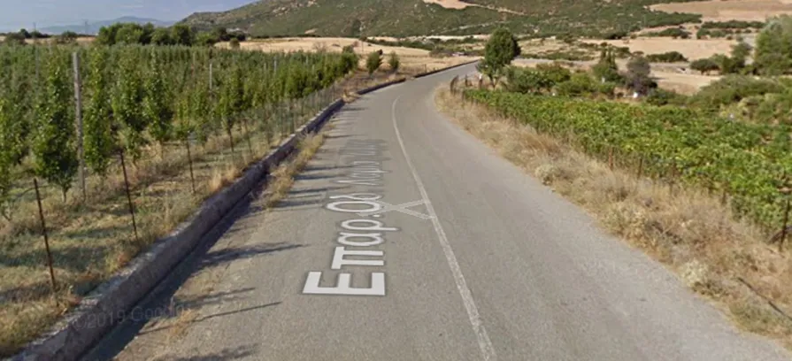
How the stage looks after the first series of hairpins.
Saturday
SS1/SS4 – Krikello – 8,80 km
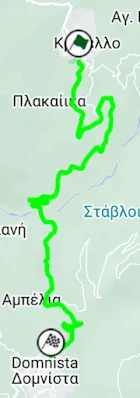
Map of the stage, never used before
The first stage of the rally is quite a tricky one. The stage starts off twisty and slow, descending down the mountain. After a series of hairpins, it passes a bridge where a river flows underneath, and then it starts climbing up again, with the end near the Domnista village being quite twisty and technical. The road surface is generally quite smooth, but since it’s as much as 1122m up in the mountain, there is the potential for quite a lot of snow and ice.
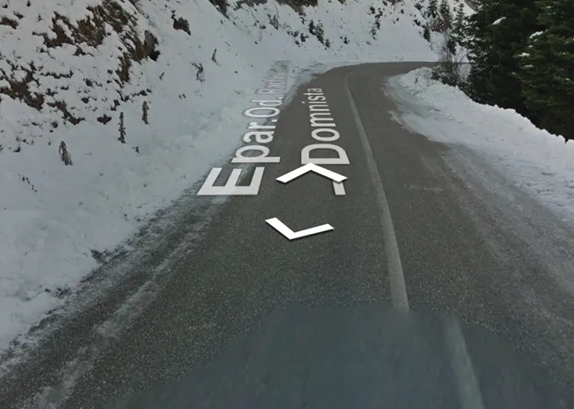
The stage near the end, at the slow part. As you can see these are proper Monte conditions.
SS2/SS6 – Grammeni Oxia – 25,1 km
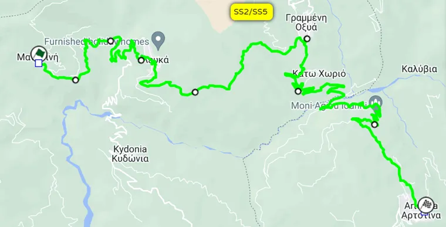
Map of the stage. Parts of it have been used in Rally Acropolis in the past.
The 2nd stage of the rally is the longest as well as the toughest of the rally in my opinion. The first part of the stage should be paved, with brand new tarmac, with a very twisty and slow descent through the mountain. After the village of Lefka which is the stage’s lowest point, it climbs up the mountain again, and the tarmac becomes less smooth, and narrower, resembling Monte Carlo at points. There should be a lot of snow and ice there, as this is one of the highest points of the entire rally! After a medium to fast ascend, the road goes downhill again after the Grammeni Oxia village, descending from 1180m to 829m, in just 5km! There are quite a lot of hairpins and many surface changes. After reaching a bridge where the river Evinos flows under, the stage goes uphill again, with a quite fast end bit, with a nice flow and medium/high speed sections which resemble Rally di Roma Capitale, where there are fast but narrow sections. There are many rhythm changes throughout this stage. The finish of the stage is where the finish of the old Acropolis stage with the same name used to be, with the last 100m being exceptionally narrow and twisty.
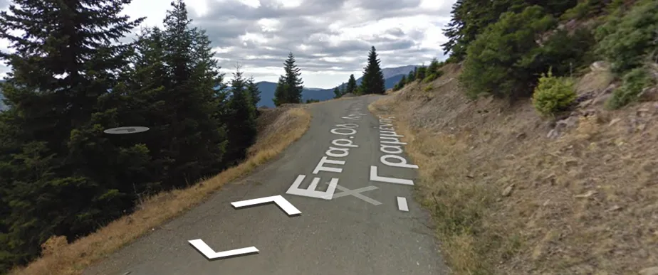
View of the stage as it ascends towards it’s highest point near Grammeni Oxia.
SS3/SS6 - Kallio – 16,1 km
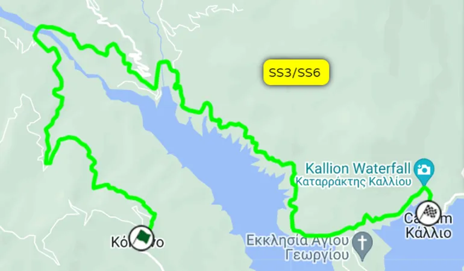
Map of the stage. Parts of the stage were used by the old Diakopi stage, that’s been used in Rally Acropolis.
The last stage of the loop and the day is the one with probably the best scenery. The stage starts near the village of Kokkino, and goes down the mountain, until it reaches a bridge. After that, there’s not much elevation change, as the stage follows the road next to the man-made Mornos Lake. The stage is quite fast at times, to the point where there could be a need for chicanes to be installed on the very fast parts. The road is quite narrow in the beginning, but it widens out after the bridge part. The road surface is quite smooth for the most part, but it has a part of about a kilometre, where the tarmac is quite broken and narrow (near the part where the stage meets a 2nd river).
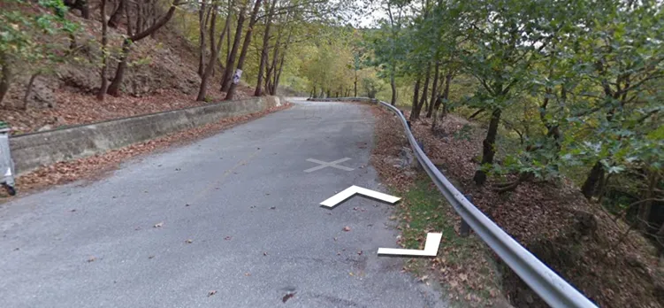
How the stage looks near the end, right after the Kallio Waterfall, it resembles Sanremo at parts.
End of Saturday,
100 km of stages, 568 km including road sections
Sunday
SS7/SS10 – Hani Zagana – 14,4 km
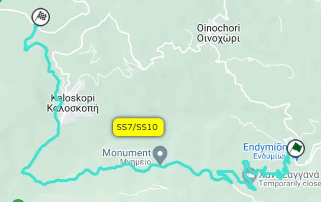
Map of the stage. It has also been used in Rally Acropolis in the past as a gravel stage, and parts of it have been used in the Tarmac Rally Fthiotidos.
For Day 2, I have gone for stages that have been used for tarmac rallies in the area for years. Hani Zagana has been used many times in the past, both as a gravel and a tarmac stage. More recently, the reverse of this stage (with the end part missing, so that it was a bit shorter) was used in Rally Fthiotidos this year. The stage starts off in a very twisty and technical road, with lots of hairpins as the road goes up the mountain. The road is very narrow and broken, so it is going to be a very challenging 3,5km for the crews. After the stage passes by the Zagana Inn, from where the stage gets its name from, the stage joins a wider road which is faster, more flowing and smoother, very reminiscent of Catalunya in places. The stage continues to be fast for about 6km. After the stage reaches the village of Kaloskopi, the road becomes more twisty, not as much as in the beginning, with this part being medium speed. The stage climbs to an altitude of 1250m, so the drivers meeting snow and ice as they go up the mountain, could be very possible.
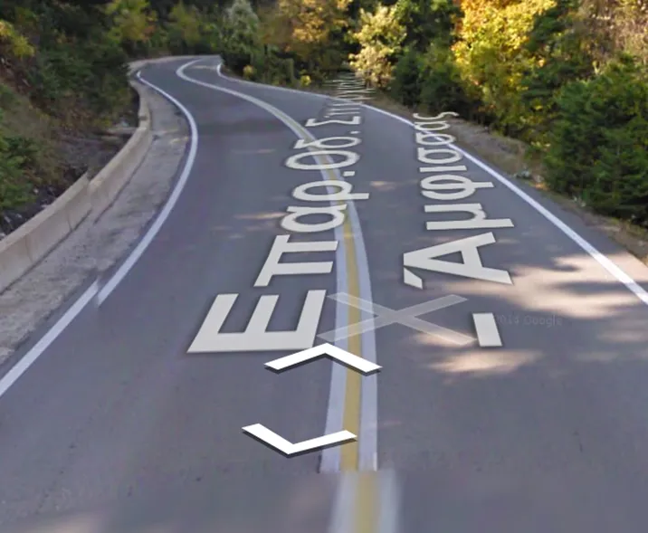
How the road looks on the fast parts in the middle of the stage. Very much like Catalunya!
Onboard of parts
of the stage here:
https://youtu.be/YTUMixrn2Eo
SS8/SS11 – Pavliani – 16,67km
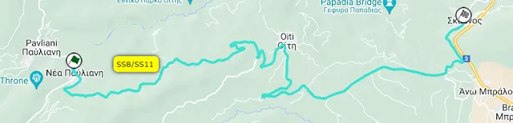
Map of the stage. Not to be confused with the Rally Acropolis stage. This stage has been used many times in the past in tarmac rallies like Rally Fthiotidos and Rally Lamias.
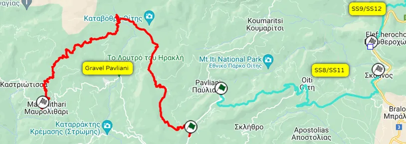
Map of where the Acropolis stage is, versus where the tarmac stage is.
Up next is potentially the fastest stage of the rally! The tarmac version of Pavliani has also been used in many tarmac rallies throughout the years. It’s a very fast stage, with average speeds of 120km/h on the Greek championship. There would probably be a need for some chicanes towards the end of the stage, as was the case for when a mammoth 30-kilometre stage (a combination of Pavliani and Bralos) was ran this year in Rally Fthiotidos. This stage goes downhill for most of its duration, with many fast-flowing sections that resemble Rally Catalunya. The end especially is really fast. The road is smooth and wide-ish. The stage has a very nice flow and if the drivers get into a rhythm on this, they’d really enjoy it.
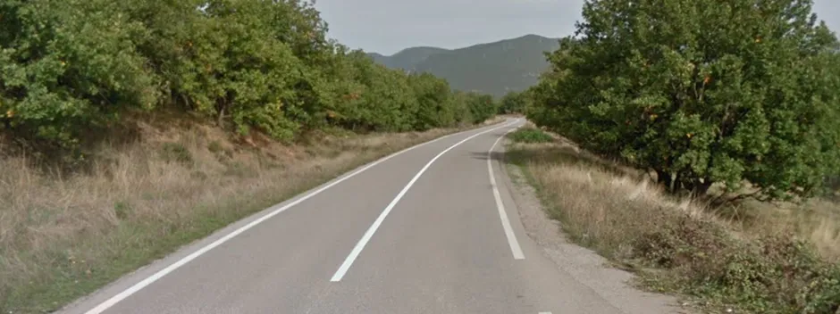
How the stage looks towards the end. It looks like Catalunya, perhaps a bit narrower.
I couldn’t find an onboard, but here’s how the area looks from some highlight videos (some Bralos in there as well)
https://www.youtube.com/watch?v=-s0laAPpuzU
SS9/SS12 [Power Stage] – Bralos – 11,67 km
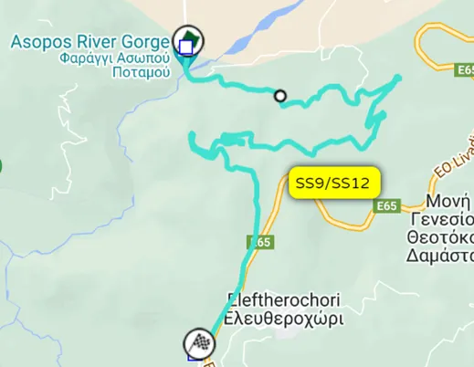
Map of the stage. Same as Pavliani/Hani Zagana. It has been used many times, even as it’s own Rally Sprint.
For the power stage I have chosen Bralos. This stage combines all elements of the rally into one. The stage starts off slow and technical, with many slow corners and a series of hairpins, but it gets very fast towards the end. The stage starts right before the Asopos river gorge, and continues up the mountain. As mentioned, the middle part of the stage is really tight and technical, with the roads giving off San Remo vibes. The road surface is actually more broken compared to the rest of the Sunday’s stages, with more bumps and broken tarmac.
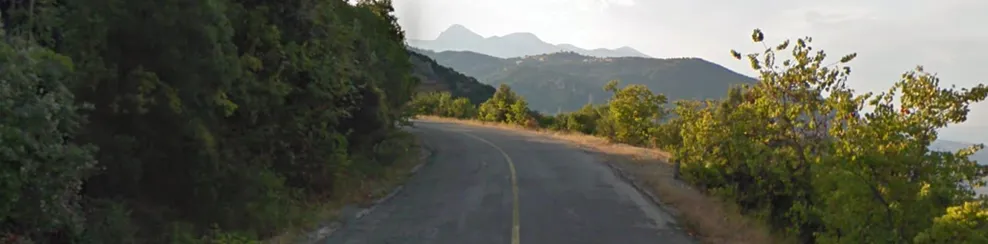
How the stage looks on the twisty bit.
Onboard of the stage here:
https://www.rally-maps.com/Rally-Fthiotidos-Tarmac-2015/Bralos#Onboard%20Video
End of Sunday
85,48 km of stages, 230 km including road sections
I have also made a
map of the rally on MapFab, you can check it out here: https://www.mapfab.com/map/AdYE/Rally-Greece-Tarmac-ERC
All pics are from the Red Bull Content Pool
Full Itinerary
Day
Stage Number
Stage Name
Distance
Friday
SD/Q
Dirvi
4,82
Saturday
SS1
Krikello 1
8,80
SS2
Grammeni Oxia 1
25,10
SS3
Kallio 1
16,10
Service -> Lamia
Saturday
SS4
Krikello 2
8,80
SS5
Grammeni Oxia 2
25,10
SS6
Kallio 2
16,10
Service -> Lamia
Leg Total Distance: 100 km
Sunday
SS7
Hani Zagana 1
14,40
SS8
Pavliani 1
16,67
SS9
Bralos 1
11,67
Service -> Lamia
Sunday
SS10
Hani Zagana 2
14,40
SS11
Pavliani 2
16,67
SS12
Bralos 2 [Power Stage]
11,67
Leg Total Distance: 85,48 km
Rally Total Distance: 185,48 km


Comments